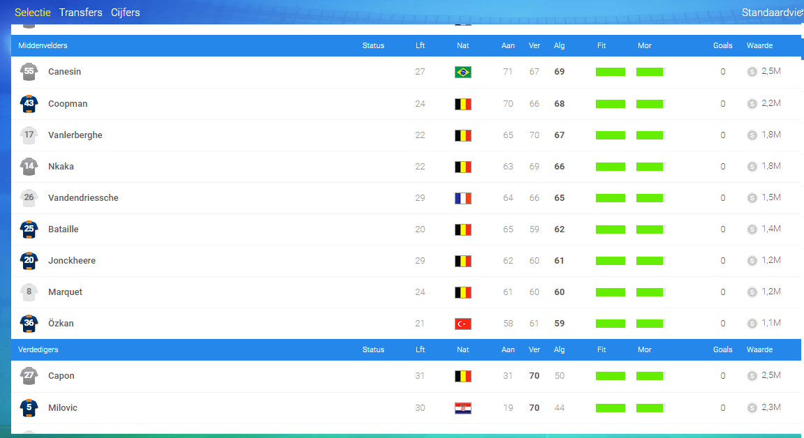

Team ❯ Selectie

Misschien wel het belangrijkste onderdeel van heel het Online Soccer Manager gebeuren is je selectie. De kwaliteiten van je spelers zijn uiteraard zeer bepalend.
Iedereen kan zijn sterkste spelers op het wedstrijdblad schrijven, maar het zijn enkel de grootste trainers gegeven om een coherent elftal bijeen te verzamelen, spelers die voor elkaar door het vuur gaan en uiteraard... voor hun coach.
Jij dus.
De aanvallers
Je aanvallers zijn de spelers die voor de doelpunten gaan zorgen. Dit doen ze aan de hand van hun aanvallende kwaliteiten.
Maar ook de verdigende kwaliteiten van je spits spelen een rol, de ideale flankspelers zijn namelijk degene die -naast hun aanvallende- ook nog een hoge rating verdedigende kwaliteit hebben.
Deze kunnen van de flank het doel bestormen of voorzetten geven voor de rest.
Een aanvaller met enkel een hoge Aanvalsrating is dus je diepe spits en zet je het best in de spits neer.
Een goed voorbeeld van een diepe spits is: IMAGE
Een goed voorbeeld van een flankspeler is: IMAGE
Het middenveld
De verdedigers
De keepers